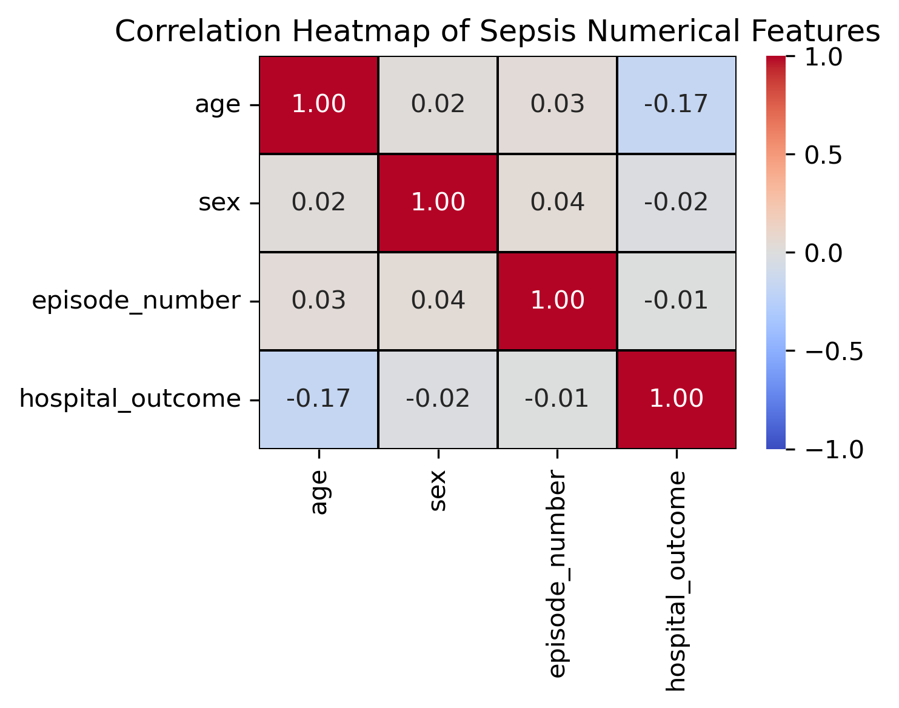
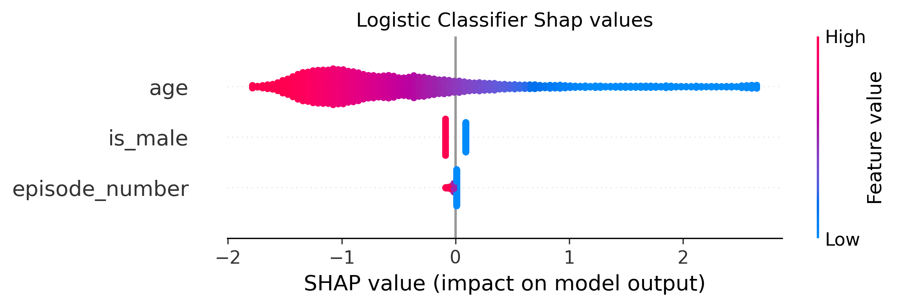

| dataset | roc auc | precision | recall | F1 score | |
|---|---|---|---|---|---|
| 0 | train | 0.70589 | 0.926455 | 1.0 | 0.961823 |
| 1 | test | 0.58812 | 0.810719 | 1.0 | 0.895466 |
Predicting Sepsis Survival Based on Clinical Records
1 Aim
This project aims to explore whether basic clinical and demographic factors could be used to predict sepsis survival outcomes. Specifically, the variables Age, Sex, and Sepsis Episode Number were examined to determine their influence on a patient’s probability of survival after hospitalization.
A dataset of over 110,000 hospital admissions from Norway (2011–2012) was obtained from the UCI Sepsis Survival Minimal Clinical Records repository (Chicco and Jurman 2020). After the Exploratory Data Analysis, a Logistic Regression model was trained and tuned via randomized search with cross-validation. Model performance was evaluated using standard metrics, including ROC AUC, Precision, Recall, and F1-score, and further interpreted using SHAP (SHapley Additive exPlanations) values to assess feature importance and contribution.
The results showed that the model achieved a ROC AUC of 0.588, with high recall but limited discriminative power. Age emerged as the strongest predictor of survival: as you get older your probability of survival decreases, with SHAP values confirming its dominant influence on the model’s output. In contrast, Sex and Episode Number had minimal impact on predictions. These findings suggest that while demographic factors provide limited predictive ability on their own, Age remains a crucial indicator of mortality risk in sepsis patients.
The analysis highlights the need for more clinical features to improve model accuracy, showing that Age and Gender are not good predictors for survival probabilities.
2 Introduction
Sepsis is a life-threatening condition that occurs when the immune system overreacts to an infection causing organ dysfunction (Clinic 2022). The reaction can cause damage to tissues and organs and it can lead to severe sepsis from low blood pressure as a result of inflammation throughout the body. The last stage is septic shock which is when blood pressure is so low that it cannot supply enough blood to vital organs such as the brain, kidneys, and liver, causing them to fail and possibly leading to death. Generally, sepsis is usually caused by bacterial infections but it could be from parasites, viruses, and fungi infections in the bloodstream, lungs. and urinary tract (Organization 2024). Common symptoms for sepsis include fever, fast heart rate, rapid breathing, low blood pressure, confusion, skin rash, chills and shivering, etc (Society 2024).
Since sepsis requires urgent medical care, a machine learning algorithm that can be used to predict if a patient is likely to survive or pass away after being hospitalized for a specific time interval from septic shock is crucial. Sepsis is often associated with immediate death risk and it can kill patients as fast as within an hour if not treated promptly. An accurate and fast machine learning model will help medical staff prioritize patients who need more urgent care and possibly save more patients from this life-threatening condition. Also, this study aims to identify which factor contributes to whether a patient is more likely to be dead from sepsis. Therefore, if a machine learning algorithm can promptly and accurately classify patients, this could lead to a better sepsis patient prioritization and save more lives.
To answer this question and produce a machine learning model, the datasets of 110,204 admissions of 84,811 hospitalized subjects between 2011 and 2012 in Norway who were diagnosed with infections, systemic inflammatory response syndrome, sepsis by causative microbes, or septic shock will be utilized to analyze and build a machine learning algorithm. It was sourced from the UCI Machine Learning Repository (Chicco and Jurman 2020). Each row in the data set represents each patient information including their age, sex, and number of prior sepsis episodes. There is an outcome of each patient whether they survive at a time of about 9 days after being hospitalized in each row. All the patients’ admissions are only defined by the novel Sepsis-3 definition.
3 Exploratory Data Analysis (EDA)
EDA is conducted first to see if any data wrangling is needed before proceeding to building a machine learning model.
From the current train and test datasets, all the data are already clean. Age ranges from 0–100 years, Sex is encoded as male/female, and Episode Number varies between 1–5 with no missing values, so no imputation is required.

Figure 1 presents three univariate visualizations that provide an initial understanding of feature distributions and how they relate to survival outcome:
- Age distribution: The left histogram shows age is widely spread between 0–100 years, with a clear right-skew toward older patients. Both survival and death outcomes overlap heavily across ages, but deaths appear slightly more common in the upper age range.
- Episode count distribution: The middle bar chart reveals that most patients experience only a single prior sepsis episode, with rapidly decreasing frequency as episode count increases.
- Sex vs Outcome counts: The heatmap on the right displays the cross-tabulation of sex and survival outcome. Both males and females predominantly fall under the survived category, with similar proportions, indicating sex alone is not a strong differentiator for survival.

Figure 2 presents multivariate distributions using boxplots, showing how age varies with episode count and patient sex across outcome groups.

Figure 3 displays the correlation heatmap, confirming that age is the most strongly related feature to survival outcome, while sex and episode count show weaker associations.
3.1 EDA key findings
Figure 1 illustrates the age distribution and outcome imbalance.
As seen in Figure 2, age varies across outcome and episode groups.
Figure 3 confirms age as the strongest predictor for survival.
- Highly imbalanced target: The dataset contains a majority of Sepsis survivors (93%). This suggests the use of specific metrics (e.g., recall, precision, aucpr) and resampling techniques to address class imbalance.
- Weak predictors: Correlation analysis and visualizations showed that there are no strong associations between any of the features and the target. This suggests that these features might have limited predictive power and the model may not be able to generalize well with such features
- No Multicolinearity: No high correlation between features, so no risk of multicolinearity.
- What preprocessing needs to be applied:
- Age is a numeric variable and should be standardized, no missing values.
- Sex is a binary categorical variable with no order of magnitude and should be one-hot encoded, no missing values.
- Episode number is a numeric variable and should be standardized, no missing values.
By looking at the classification metrics above we can directly see that the model achieved a train ROC AUC of 0.706 and a test ROC AUC of 0.588. This is likely due to the very limited number of features available to train the model, which limits its ability to generalize well to unseen data and the data imbalance between target groups.
As seen in Figure 1, the predicted probability distributions for Survived and Died overlap almost completely.
This explains the weak ROC AUC: the model struggles to rank classes effectively given the limited features available.
Table 1 confirms that recall and precision are inflated due to class imbalance, and the model overfits by performing much better on training data than test data.
4 Model Interpretation
4.1 Logistic Regression Coefficients
The final logistic model learned the relationship between features and survival:
logit(p) = 2.993 -1.069·Age -0.018·Episode Number -0.178·Is Male
Even though the model underperforms, we can still interpret the learned coefficients:
- The intercept is 2.993, representing baseline survival log-odds when all predictors equal zero.
- Age has the strongest negative effect (-1.069), meaning survival probability decreases as age increases.
- Episode number has a small coefficient (-0.018), suggesting only minor influence on survival.
- Being male has a coefficient of (-0.178), indicating slightly lower survival odds than females.
4.1.1 SHAP Explanation and Feature Importance
[SHAP (SHapley Additive exPlanations)] (Lundberg, Lee, and contributors 2025) is a method used to explain how individual features contribute to a machine learning model’s predictions. It assigns a numerical value to each feature that represents how much that feature pushes the prediction up or down. A higher SHAP value indicates a higher level of importance, meaning the feature has a stronger influence on the model’s decision. SHAP is particularly useful for understanding both global feature importance and how a single observation is being predicted. In this analysis, SHAP values are used to determine which features are most important in the logistic regression model predicting sepsis hospital survival.
To interpret the logistic regression model, SHAP values were computed to measure the contribution of each feature to the model’s output. The model includes three predictors: age_in_years, sex, and episode_number. The SHAP values represent the average magnitude by which each feature affects the prediction across all test samples.
The SHAP summary plot below visualizes how each feature contributes to the logistic regression model’s output. The longest bar corresponds to the feature with the highest average absolute SHAP impact — meaning it contributes the most to shifting predictions up or down.

From the plot, Age is clearly the most influential feature, showing the largest magnitude of SHAP values. This means that changes in age have the strongest effect on predicted survival probability. Episode number has noticeably lower impact, while is_male (encoded from Sex) contributes very little to the model, indicating minimal difference in predicted survival between males and females.
These observations align with earlier findings from the coefficients and correlation analysis — the model relies primarily on age when predicting survival, while the other two variables provide limited predictive signal.
Overall, the SHAP analysis shows that age is the dominant predictor used by the model, and that there’s a negative association between age and survival probability. Sex has minimal influence, but it suggests also that males have a slightly smaller chance to survive to a Sepsis episode.
5 Results & Discussion
The results of the analysis indicate that age is the dominant factor influencing survival in sepsis patients. Both the correlation analysis and SHAP explainability results show that older patients have a significantly lower probability of survival, with age having a mean SHAP importance value nearly ten times higher than any other feature. In contrast, sex and episode number contribute minimally, suggesting that demographic features alone cannot capture the full complexity of sepsis mortality risk.
The model achieved a test ROC AUC of 0.588, indicating limited discriminative ability.
Despite a high recall of 1.000 and a precision of 0.811 on the test set, these inflated values are largely driven by the strong class imbalance (approximately 93% survivors vs 7% non-survivors).
6 References
Chicco, Davide, and Giovanni Jurman. 2020. “Sepsis Survival Minimal Clinical Records [Dataset].” UCI Machine Learning Repository. https://doi.org/10.24432/C53C8N.
Clinic, Cleveland. 2022. “Septic Shock: Causes, Symptoms & Treatment.” https://my.clevelandclinic.org/health/diseases/23255-septic-shock.
Lundberg, Scott M., Su-In Lee, and SHAP contributors. 2025. “SHAP (SHapley Additive exPlanations) [Computer Software].” https://github.com/shap/shap.
Organization, World Health. 2024. “Sepsis.” https://www.who.int/news-room/fact-sheets/detail/sepsis.
Society, Canadian Cancer. 2024. “Sepsis and Septic Shock.” https://cancer.ca/en/treatments/side-effects/septic-shock.